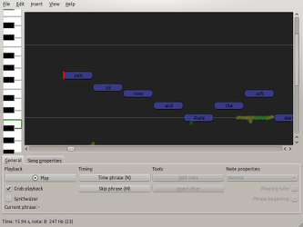
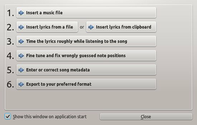
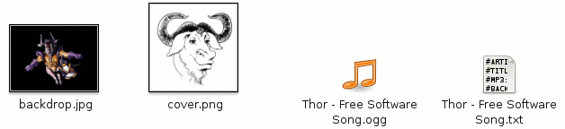

Performous - Composer
Dieser Artikel wurde für die folgenden Ubuntu-Versionen getestet:
Ubuntu 16.04 Xenial Xerus
Zum Verständnis dieses Artikels sind folgende Seiten hilfreich:
Composer  ist ein zusätzliches Werkzeug für Performous mit dem Karaoke-Lieder selbst erstellt und nachbearbeitet werden können. Es wurde so konzipiert, dass Abläufe soweit wie möglich automatisiert wurden. So werden z.B. vorhandene Metadaten aus Musikstücken übernommen. Ein Assistent hilft bei den wichtigsten Grundschritten. Als Alternative steht Yass zur Verfügung.
ist ein zusätzliches Werkzeug für Performous mit dem Karaoke-Lieder selbst erstellt und nachbearbeitet werden können. Es wurde so konzipiert, dass Abläufe soweit wie möglich automatisiert wurden. So werden z.B. vorhandene Metadaten aus Musikstücken übernommen. Ein Assistent hilft bei den wichtigsten Grundschritten. Als Alternative steht Yass zur Verfügung.
Im Programm stehen Import- und Exportfunktionen für folgende Formate zur Verfügung:
SingStar XML
UltraStar TXT
|  |
| Hauptfenster mit Free Software Song by Thor |
Installation¶
Die vom Projekt bereitgestellen Pakete sind auf keiner aktuell unterstützten Ubuntu-Version installierbar, weshalb die Software entweder selbst kompiliert oder aus Fremdquellen installiert werden muss.
PPA¶
Ab Ubuntu 16.04
Adresszeile zum Hinzufügen des PPAs:
ppa:tomtomtom/performous-composer
Hinweis!
Zusätzliche Fremdquellen können das System gefährden.
Ein PPA unterstützt nicht zwangsläufig alle Ubuntu-Versionen. Weitere Informationen sind der  PPA-Beschreibung des Eigentümers/Teams tomtomtom zu entnehmen.
PPA-Beschreibung des Eigentümers/Teams tomtomtom zu entnehmen.
Damit Pakete aus dem PPA genutzt werden können, müssen die Paketquellen neu eingelesen werden.
performous-composer
 mit apturl
mit apturl
Paketliste zum Kopieren:
sudo apt-get install performous-composer
sudo aptitude install performous-composer
Bedienung¶
Assistent¶
Beim ersten Programmstart hilft der Assistent bei der Grundbedienung und beim schnellen erreichen der Basisfunktionen. Diese sind ebenfalls über die Menüpunkte in Composer zu erreichen.
|  |
| Assistent |
Projekt¶
Als erstes importiert man das gewünschte Musikstück, welches als mp3 oder ogg vorliegen sollte. Anschließend wird die txt-Datei mit dem Liedertext eingelesen. Die Daten sowie die Tonhöhe werden analysiert und eine Note für jedes Wort erzeugt. Im nächsten Schritt wird am Anfang jeder Zeile eine Markierung platziert.
Hinweis:
Liedertexte sind im Internet zu finden - teilweise auch schon in bearbeiteter Form.
Im nächsten Schritt startet man im Reiter "Extra" die Wiedergabe des Musikstücks und setzt bei jedem Satz mit N "Time Phrase" die Position im Musikstück. Auf diese Weise werden nur die Satzanfänge grob festgelegt und bietet einen Ausgangspunkt für die Feinabstimmung. Per Drag&Drop können die Noten verschoben, die Tonhöhe verändert und Wörter getrennt werden, um z.B. den Text genauer an das Musikstück anzupassen. Nützliche Werkzeuge findet man unter dem Menüpunkt "Edit".
Über "Note properties" kann festgelegt werden ob es sich abweichend um Freestyle oder eine goldene Note handelt.
Hinweis:
Zur genaueren Bearbeitung steht dem Nutzer hier eine  Zoom-Funktion zur Verfügung.
Zoom-Funktion zur Verfügung.
Tags¶
Über den fünften Punkt im Assistenten können die Tags zum Song bearbeitet werden. Dieser Punkt befindet sich im Hauptfenster unter "Song properties". Neben dem Titel kann der Künstler, das Genre und das Jahr angegeben werden.
Fertig¶
Nachdem das Projekt, über "File -> Export -> UltraStar TXT...", gespeichert wurde kann die Datei in einem Editor [3] geöffnet werden. Sie sollte in etwas so aussehen:
: 0 2 7 Join : 2 2 5 us : 4 2 4 now : 6 2 2 and : 8 2 0 share : 10 2 2 the : 12 2 4 soft : 14 2 0 ware - 16 : 16 4 0 You'll : 20 2 2 be : 22 2 4 - : 24 4 5 free : 28 2 4 ha : 30 2 7 cker, : 32 4 2 you'll : 36 4 2 be : 41 1 7 free : 42 1 9 - : 43 1 7 - : 44 1 5 - : 45 3 4 - - 48
Diese Datei wird anschließend mit zusätzlichen Informationen ergänzt.
Unter "Help -> Getting started" steht ein Leitfaden zur Bedienung des Programms zur Verfügung.
Weiterverarbeitung¶
Nachdem das Projekt in einen eigenständigen Ordner gespeichert wurde, wird in diesen ebenfalls das Musikstück kopiert und ggf. noch ein Cover sowie ein Hintergrundbild hinterlegt. Falls gewünscht kann auch ein passendes Video eingebunden werden.
Der Ordner kann die folgenden Dateien enthalten:

| Inhalt | |
| Bereich | Beschreibung |
| Cover | Dateinamen cover, album oder label mit der Endung .png, .jpeg, .jpg oder .svg. Größe: 170x170 Pixel. |
| Hintergrundbild | Die Namen backdrop, bg oder background mit den Endungen .png, .jpeg, .jpg oder .svg. |
| Videos | Hier darf jeder Titel verwendet werden. Unterstützt werden die Formate .avi, .mpg, .mpeg, .flv, .mov und .mp4. Videoauflösung: 640x336 |
Damit die hinterlegten Daten von Performous angenommen werden, muss die Textdatei, welche man sich im Vorfeld erstellt hat, mit einem Editor [3] bearbeitet werden. Hier müssen die Dateinamen der hinterlegten Daten angepasst werden.
Als Minimum müssen folgende Zeilen enthalten sein - sofern kein Cover bzw. Hintergrundbild hinterlegt wird greift Performous auf eigene Bilder zurück:
#TITLE:Free Software Song #ARTIST:Thor #MP3:Thor - Free Software Song.ogg #BPM:75,15 #GAP:14200
Es sind weitere Ergänzungen möglich:
| Dateistruktur | |
| Punkt | Beschreibung |
#ARTIST:Interpet | Der Interpret des Liedes. |
#TITLE:Songname | Titel des Liedes. Dieser wird bei der Auswahl des Liedes angezeigt. |
#MP3:Song.Endung | Name der Audio-Datei - mögliche Formate: mp3 / ogg |
#BACKGROUND:Hintergrundbild.jpg | Hintergrundbild bei der Liederwiedergabe. |
#COVER:Cover.png | angezeigtes Cover |
#BPM:75,15 | Geschwindigkeit des Liedes |
#GAP:14200 | Der Abstand des Textes vom Anfang des Liedes in Millisekunden. |
#VIDEO:Titel.mpg | Dateiname der Video-Datei.Der Sound des Videos wird nicht abgespielt. |
#VIDEOGAP:142000 | vgl. GAP - hier auf das Video bezogen. |
#RELATIVE:YES | Gibt an, ob die Zeitstempel nach jeder Zeile wieder von 0 anfangen (yes) oder nicht (no). |
#EDITION:Ubuntuusers | Name der Sammlung - hier: Ubuntuusers |
#LANGUAGE:English | Sprache z.B. German Spanish |
Tipps¶
Tastenkürzel¶
| Steuerung | |
| Taste(n) | Beschreibung |
| F1 | Hilfe |
| Strg + S | Projekt speichern |
| Strg + O | Projekt öffnen |
| Strg + + / Strg + - | Zoomen |
| Strg + Q | Programm beenden |
Links¶
Performous - Hauptartikel
Editor on Fire
 - Gitarre, Bass und Schlagzeug
- Gitarre, Bass und Schlagzeug

- Erstellt mit Inyoka
-
 2004 – 2017 ubuntuusers.de • Einige Rechte vorbehalten
2004 – 2017 ubuntuusers.de • Einige Rechte vorbehalten
Lizenz • Kontakt • Datenschutz • Impressum • Serverstatus -
Serverhousing gespendet von